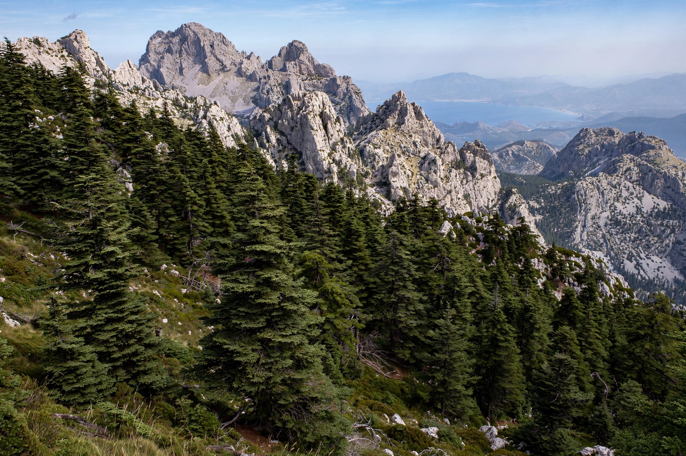

Mount Parnassus
| Mount Parnassus | |
|---|---|
| Elevation | 2,457 m (8,061 ft) |
| Location | Phocis and Boeotia, Central Greece |
| Range | Pindus Mountains |
| Greek name | Παρνασσός (Parnassós) |

Mount Parnassus (Greek: Παρνασσός, Parnassós) is a limestone mountain in central Greece, rising to 2,457 metres (its highest peak, Liakoura) north of the Gulf of Corinth and towering above the ancient sanctuary of Delphi, which lies on its southwestern slopes. In Greek mythology the mountain was sacred to Apollo and to Dionysus, and was the home of the Muses; as a result, "Parnassus" became a byword in Western culture for poetry, literature and learning.
Mythology
Parnassus takes its name, in tradition, from Parnassos, son of Kleodora and the god Poseidon, credited with inventing augury from birds. The mountain was the site of the Castalian Spring, where pilgrims to Delphi purified themselves, and of the Corycian Cave, sacred to Pan and the nymphs. Above Delphi stood the oracle of Apollo, whose priestess, the Pythia, delivered prophecies for over a thousand years. In the myth of the great flood, Deucalion and Pyrrha landed their ark on Parnassus's slopes and repopulated the earth. The mountain also hosted the Dionysian rites of the Thyiades, who danced in ecstasy on its heights every other winter.
The mountain today
Mount Parnassus forms the core of a Greek national park (established 1938), with fir forests of Abies cephalonica, endemic flora, and populations of wolves and birds of prey; the bauxite deposits on the massif are mined extensively. On its northern slopes are Greece's largest ski resorts, at Kelaria and Fterolakka, while the village of Arachova, on the southern approach road, is known for weaving and as a winter resort. The ancient site of Delphi, a UNESCO World Heritage Site, remains one of Greece's most visited archaeological sites.
In culture
Because of the Muses, "Parnassus" figures throughout European literature — from the Renaissance onward, poets "climbed Parnassus" in pursuit of inspiration, and Paris took the name for the Montparnasse district, nicknamed by students in the 17th century. Raphael's fresco The Parnassus in the Vatican shows Apollo and the Muses on the mountain with great poets of antiquity and the Renaissance.
See also
Delphi · Muses · Apollo · Mount Olympus